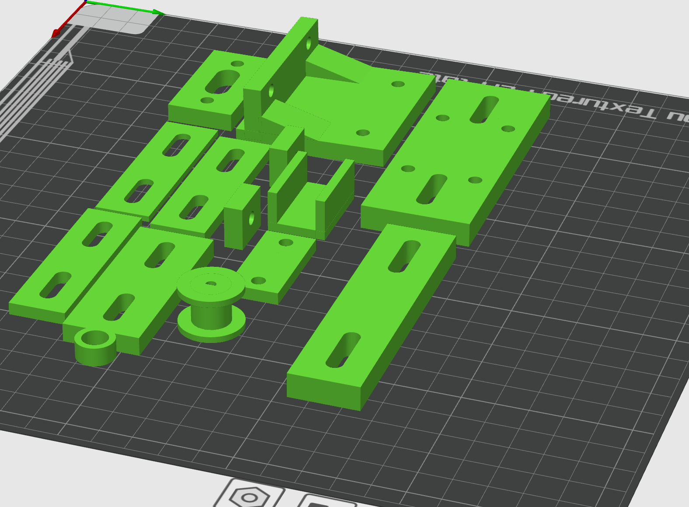

ModuGrip
Motorized drawer-opening system using an Arduino, motor driver, and custom 3D-printed components.



Overview
ModuGrip is a motorized drawer-opening system designed to make opening a drawer easier through embedded control and custom mechanical design. The system uses an Arduino, motor driver, and custom 3D-printed parts to apply pulling force to a drawer through a mounted mechanism. The project focused on building a real working prototype and testing how mechanical design, mounting strength, and force transfer affected performance.
Objectives Demonstrated
Objective 1: Design and complete robotic and embedded systems solutions that apply to real-world situations and challenges.
ModuGrip meets this objective by addressing a real-world accessibility and convenience problem through a complete embedded-mechanical system. The project applies motors, electronic control, and custom mechanical parts to automate the task of opening a drawer. Because the design moved beyond concept and into a tested physical prototype, it demonstrates my ability to design and build an embedded system solution that responds to a practical need.
Objective 3: Demonstrate embedded system design skills, including, but not limited to, microcontroller selection, schematic design, printed circuit board layout, design for electromagnetic compatibility and design for manufacturing.
ModuGrip meets this objective by requiring system-level embedded design decisions around microcontroller use, actuator control, mounting design, and manufacturable custom parts. The project involved selecting a controller and motor-driving setup that could realistically power the mechanism while also designing 3D-printed structural parts that could be fabricated, mounted, and tested as part of a usable prototype. This demonstrates embedded design thinking combined with design-for-build considerations.
Objective 4: Apply knowledge of transducers, actuators and simultaneous hardware and software development in the design of an embedded system.
ModuGrip meets this objective through the integration of actuation, electronics, control behavior, and mechanical design. The motor acts as the system actuator, while the Arduino and motor driver control its behavior. At the same time, the physical parts had to be designed to transfer force effectively without slipping or failing. This required hardware and software development to progress together, since the success of the system depended on both the control logic and the physical design working as one system.
Testing and Iteration Findings
Testing showed that the core idea worked, but also revealed several important limitations that needed to be addressed. The system was able to begin opening the drawer, but it eventually lost tension when the pulling mechanism slipped. This showed that while the concept was functional, the force transfer method was not yet reliable enough for repeated use.
Another issue was the placement of the string in the center of the drawer, which interfered with access and created a usability problem. I also found that the counter clamp needed to be adjusted to better match the counter dimensions so the system could be mounted more securely. In addition, the motor sleeve and mounting method needed improvement because the motor support was not strong enough for long-term stability under load.
These testing results were valuable because they identified specific engineering weaknesses in the prototype. Instead of showing failure, they demonstrate iterative design thinking by revealing exactly what has to be improved in the next revision: better tension retention, improved mounting security, revised force routing, and a more robust motor support system.
Evidence of Functionality
The images above document the physical prototype and show the mechanical structure, mounting approach, and implementation progress. The project successfully demonstrated that the concept could begin opening the drawer, which validates the core system idea. The testing process also provided direct evidence of how the design behaved under load and what refinements are required to improve reliability.
Project Evidence
Demo Video: Watch ModuGrip in action
Demo Evidence: The video demonstrates the ModuGrip system applying motor-driven force to initiate drawer movement. Testing confirmed that the system could begin opening the drawer, while also revealing mechanical limitations such as tension loss and mounting stability, which informed further design improvements.
Key Contributions
- Designed the overall drawer-opening concept and system layout
- Integrated Arduino control with motor driver and actuator behavior
- Created custom 3D-printed components for mounting and force transfer
- Tested the prototype under real use conditions and documented failure points
- Identified design improvements for mounting security, motor support, and tension retention